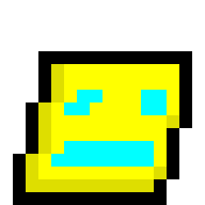

Bienvenue sur mon site

Ce site est consacré à Geometry Dash, un jeu vidéo que j’aime beaucoup.
C’est un jeu de rythme et d’adresse : on contrôle un petit cube qui avance tout seul dans un décor coloré, et il faut le faire sauter au bon moment pour éviter les obstacles, le tout en suivant la musique.
Le jeu existe sur téléphone et sur ordinateur, et il est connu pour être très difficile : certains niveaux demandent des centaines, voire des milliers de tentatives avant d’être réussis.
Le but du jeu
Le but est d’arriver au bout du niveau sans toucher un seul obstacle.
Si le cube touche un pique ou un mur, il explose et le niveau recommence depuis le début.
Il faut donc recommencer de nombreuses fois, apprendre le niveau par cœur et être très précis dans ses appuis.
Chaque tentative permet de mieux connaître le niveau et d’aller un peu plus loin. C’est ce qui rend le jeu à la fois frustrant et très satisfaisant quand on réussit enfin.
Ce que vous allez trouver sur ce site
Le jeu
Une présentation complète, pour comprendre le jeu même si vous ne le connaissez pas : le principe, les plateformes, les modes de jeu, les obstacles, les niveaux de difficulté et en particulier les niveaux Demon.
Ma progression
La liste des niveaux que j’ai terminés dans un tableau (difficulté, étoiles, nombre de tentatives), avec quelques extraits pour me voir en action.
Contact
Un formulaire pour me dire si vous connaissiez déjà le jeu, quel niveau vous préférez parmi les extraits, et me laisser un message.